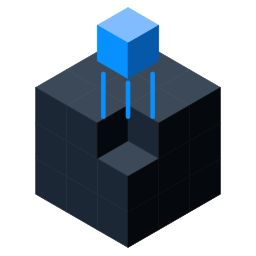
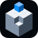
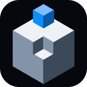
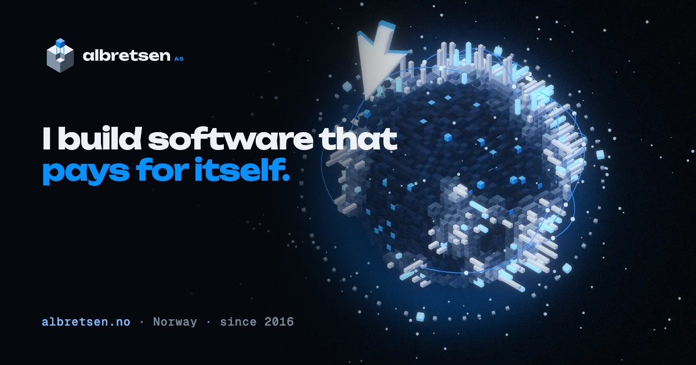
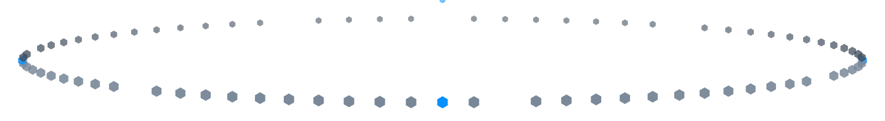

Direction
Mischievous genius, drawn in true isometric. One near-black, one electric blue, grain on everything.
A globe of activity you could hold in one hand: every block is axis-aligned, every tower is a thing shipped, and the cursor that built it never stops fiddling with it.
One voxel is always out of place: lifted from its slot in the mark, pried loose on the planet, jumping the track in the orbit divider. Order with one deliberate break.
CC0 terrazzo (ambientCG) is mapped onto every block, and every still gets film grain in post. Surfaces feel made rather than rendered.
Things are flung, not faded: spring overshoot, orbit trails, a View Transition that swallows the page into the pointer. All of it stays legible and stops for reduced motion.
Palette
Seed hue 252° in OKLCH. Eight neutrals share the hue so the blacks feel cold and the greys feel lit. Volt is the only colour; product logos bring their own.
Type
Unbounded for display: wide, geometric, a little cheeky. Geist for reading. Geist Mono for facts, labels and the MCP command. All OFL, vendored in fonts/.
I build software that pays for itself. Published on Google Play since 2016. Takes one outside engagement at a time.
Geist Mono 500 · factsIdentity
The mark is a 3×3×3 voxel cube with its near corner launched out of its slot. Hover or tap the mark to make it pop. Text is outlined from Unbounded so the SVGs need no fonts.





Hero imagery
Rendered in three.js with an orthographic camera at the true isometric angle (35.26°), lit by a Poly Haven studio HDRI, then graded in Python: bloom, accent halo, vignette, film grain. 1600 and 3200 wide, WebP + AVIF.


Products
Each live product gets a plinth in the same isometric world. The real logos are mapped unaltered onto the front face of a thick app-icon tile; the props around them explain the product without words.
Extras
Texture and life for the rest of the site: stickers with real facts, the 3D cursor, loose voxels, grain, a regraded CC0 terrazzo and an isometric grid.



Interactive
Left: the live planet (planet3d.js, three.js 0.170). Right: Gravity Well (orbit-physics.js), real products orbiting the planet on matter.js with a hand-written inverse-square attractor. Grab and fling a product; tap empty space to add a block of activity.
Motion
motion.css + motion.js. Four named signatures plus ambient grain. All of them collapse to instant changes under prefers-reduced-motion.
Flung in on a curve with a CSS linear() spring that overshoots once and settles.
Rises along the isometric axis while a stepped extrusion grows underneath. Driven by a registered custom property.
View Transitions API: the old view is sucked into the pointer with a quarter twist while the new one opens from it.
The mark's loose voxel squashes, springs out of its slot and lands. Use on the nav mark and on load.